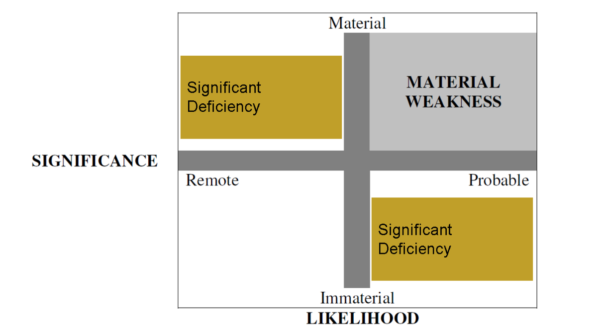

Source acknowledgements 1
Introduction
Initial Public Offerings (IPOs) are an exciting time. Often the client is reaching an important new step in their company’s development – going public – the process of raising new equity capital and listing on a public exchange. These clients, often entrepreneurs having seen their ideas blossom are excited about growth and taking on new markets.
“Why is the risk of material misstatement higher for companies who have recently gone public?”
In this case, we will discuss the role of the audit and assurance in the IPO setting. This case covers four interrelated topics: (i) the fundamental differences between public and private companies, (ii) the financial reporting risks arising when transitioning from public to private; (iii) the risk of material weaknesses in internal control arising when transitioning from public to private; and (iv) the measurement and quantification of misstatement risk differences between recent IPOs.
This case introduces audit risk (also known as misstatement risk) which is the risk that the auditor may unknowingly fail to appropriately modify the opinion on financial statements that are materially misstated (PCAOB AS 1101). Specifically, US auditing standards highlight the prominence of material errors, including fraud, in Paragraph .02 of AS 1001, Responsibilities and Functions of the Independent Auditor, stating:
“The auditor has a responsibility to plan and perform the audit to obtain reasonable assurance about whether the financial statements are free of material misstatement, whether caused by error or fraud”
The misstatement of financial information is defined in the Auditing Standards in Appendix A of AS2810 “Evaluating Audit Results” as:
“A misstatement, if material individually or in combination with other misstatements, causes the financial statements not to be presented fairly in conformity with the applicable financial reporting framework. A misstatement may relate to a difference between the amount, classification, presentation, or disclosure of a reported financial statement item and the amount, classification, presentation, or disclosure that should be reported in conformity with the applicable financial reporting framework. Misstatements can arise from error (i.e., unintentional misstatement) or fraud.”
Note that fraud has long been of additional interest to auditors and regulators. The current auditing standard AS 2401 (previously AU Section 316) “Consideration of Fraud in a Financial Statement Audit” distinguishes fraud from errors based on the intention of the actions undertaken by management. Specifically, “fraud is an intentional act that results in a material misstatement in financial statements that are the subject of an audit.” (AS 2401 ¶.05). Please note, however, that fraud is not “everywhere,” in many companies with strong controls over operations and financial reporting, fraud is very difficult for an individual to commit.
In this case, we will focus our discussion around why IPOs as a group have higher audit risk and if we can identify which IPOs are riskier than the average. Is the reason that IPOs spend less resources on internal controls? Which types of accounting present unique challenges at the IPO? Are different firms more likely to be better prepared for the financial reporting challenges occurring at an IPO?
Background
Undertaking an IPO is a significant decision for any private firm. The shift from being a private firm, where the firm can largely choose the level of financial disclosure and transparency they provide to the public, public firms are regulated to provide audited financial disclosures, with transparency determined by standards, listing requirements and enforcement by the SEC. An IPO is a financing and legal event that combines the raising of capital and listing on a public exchange. As such, the client undertaking the IPO benefits from the raising of new equity capital, at the cost of increased disclosure, compliance costs and associated financial disclosure misstatement risks.
What is an IPO? The initial public offering (IPO) is the first offer to sell ownership equity (stock), which is registered and marketed to the public. The SEC imposes conditions on the sellers of private company stock that greatly reduce the marketability of the stock. Undertaking an IPO is a significant decision for any private firm. An IPO is a financing and legal event that combines the raising of capital and listing on a public exchange. Following the IPO, company stock that was part of the registration can be traded on a secondary market, either a public market (NYSE, NASDQ) or over-the-counter market (OTCBB, Pink Sheets). A secondary market is a market where investors buy and sell stock with other investors rather than with the company.
A private firm can largely choose the level of financial disclosure and transparency they provide to the public. Public firms are regulated to provide audited financial disclosures, with transparency determined by standards, listing requirements and enforcement by the SEC. While the client undertaking the IPO receives many benefits from being publicly traded, there are costs of increased disclosure and compliance as well as increased financial disclosure misstatement risks.
A Brief Overview of the Going Public Process
Undertaking an IPO is a significant decision for any private firm. The first step in the process for the client is to decide that they want to IPO and seek out the various professional services experts to undertake the significant IPO process.
In general, the indicators for possible success for the IPOs are generally related to the performance and preparation of the company. In general, the client needs to find the answers to the following types of questions:
 In PwC’s “Roadmap for an IPO” whitepaper they state,” The most important question a CEO should ask is, “Why do I want to go public?”” and provide a list of reasons:
In PwC’s “Roadmap for an IPO” whitepaper they state,” The most important question a CEO should ask is, “Why do I want to go public?”” and provide a list of reasons:
Raising capital
Acquiring other companies
Attract/retain key employees
Diversification & liquidity
Enhancing reputation
Are these reasons equal? Do any of them present a higher audit risk?
Has the company outperformed their peers and established sufficient evidence that the growth prospects of the company are favorable? Is the management team and their advisors capable and committed to taking the company public? Does the firm have an effective control system? Does the firm have sufficient financial controls to meet the requirement to file timely quarterly financial reports?
An example from Groupon’s S-1 filing: Jason E. Child has served as our Chief Financial Officer since December 2010. From March 1999 through December 2010, Mr. Child held several positions with Amazon.com, Inc. (NASDAQ: AMZN), including Vice President of Finance, International from April 2007 to December 2010, Vice President of Finance, Asia from July 2006 to July 2007, Director of Finance, Amazon Germany from April 2004 to July 2006, Director of Investor Relations from April 2003 to April 2004, Director of Finance, Worldwide Application Software from November 2001 to April 2003, Director of Finance, Marketing and Business Development from November 2000 to November 2001 and Global Controller from October 1999 to November 2000. Prior to joining Amazon.com, Mr. Child spent more than seven years as a C.P.A. and a consulting manager at Arthur Andersen. Mr. Child received his Bachelor of Arts from the Foster School of Business at the University of Washington.
Many of these questions are answered by the client by engaging professional services, including the services of an audit firm.
Another trend that is observed prior to the IPO are changes in the management and advisors with an increase in individuals who have public firm experience.
What are the benefits of being a public firm? Being a public firm provides significant strategic, financial, legal, and economic benefits to both the firm and owners. Depending on the needs of the firm and the owners different benefits may be more important than others. The firm also obtains some economic benefits indirectly through benefits to the owners. If the value of owner interest can be increased through increased marketability or decreased risk this will lower the cost of capital to the firm.
Benefits to the owner: The owners of a private firm may benefit from the ability to trade their ownership interests on a public market with decreased governmental restriction on trading. Most owners of private firms have significant portions of their wealth invested in the firm with limited ability to diversify their holdings. A public market for the stock will allow the owners to liquidate some of their holdings and allow them to better diversify their wealth resulting in decreased risk. Many IPO’s include secondary offerings where a portion of the shares sold to the public are founder shares in addition to new stock being issued by the firm. Owners will also face lower future liquidity risk if they can sell stock when they need cash rather than having to negotiate private sales of stock.
Owners also benefit from the information environment of a public firm. In going public the firm has committed to providing increased public disclosures of information both at the time of the IPO and in the future. This increased availability of information reduces information asymmetry and decreases risks faced by stockholders.
A final significant benefit to owners is the availability of a public objective valuation of their ownership interests. Owners often need to perform estate planning and engage in other personal financial transactions. Often these require estimating the value of their stock holdings. When the holdings are in a private firm the valuation requires a great deal of estimation and uncertainty. Having a publicly available frequent transaction price for their stock greatly simplifies estimation of value.
Benefits to the firm: One of the most significant benefits to firms of being public is access to greatly increased sources of financing. As a private firm access to equity financing is limited to the personal wealth of owners or to the amount venture capital investors are willing to provide. By accessing millions of potential investors in the public market the availability of funds is increased by orders of magnitude. Often this access to increased funding happens over time with the IPO creating an access to markets and follow on stock issues providing greater funding amounts once the public is more familiar with the firm and market prices for the firm are more established. Often in the period directly after the IPO firms will raise capital using convertible debt instruments. Discussion of the figure.
Figure 1
Title for this figure
| Category | VC prior to IPO | IPO |
|---|---|---|
| 2006 | $50.29 | $95.20 |
| 2007 | $59.24 | $93.42 |
| 2008 | $31.84 | $117.18 |
| 2009 | $63.25 | $153.04 |
| 2010 | $70.10 | $90.61 |
| 2011 | $87.50 | $130.00 |
| 2012 | $71.32 | $92.00 |
| 2013 | $99.81 | $102.48 |
| 2014 | $79.70 | $100.00 |
| 2015 | $92.27 | $87.59 |
| 2016* | $84.50 | $90.00 |
Notes: Data sourced from Pitchbook, US PE & VC IPO Trends, 2016 Report.
A second benefit to firms is the ability to use their stock as a medium of exchange. When acquiring other companies a firm has the choice of paying either cash or stock to the existing owners. In large acquisitions it is desirable to pay for the acquisition in stock because large cash amounts may not be available or may create liquidity and financing issues for the acquirer. Existing owners in the acquired firm may not be willing to take stock in payment if the acquiring firm is not publicly traded and thus the stock is not easily marketable.
A related benefit to firms is the ability to pay employees with stock. Employees are more willing to accept stock compensation when the stock they receive is marketable. They can also more easily determine the value of the compensation they are receiving when the stock has a objectively determined market price. The value of stock options, ESOPS, and other related equity instruments is also more easily determined. The use of these instruments allows the firm to attract and reward talented employees while retaining cash for other uses.
A final benefit to the IPO is increased public awareness. The process of an IPO itself can generate significant free publicity for the firm as the financial press carries stories in anticipation of the IPO. Following the IPO financial analysts may begin following the firm creating increased ongoing awareness and interest. Being public also creates an aura of creditability that may lead to improvement in terms with suppliers and creditors.
 Have you heard about the giant Chinese e-retailer Alibaba?
Have you heard about the giant Chinese e-retailer Alibaba?
… Thinking back, how much did you know about Alibaba before their IPO?
What are the costs of being a public firm? While being a public firm provides many advantages, there are also significant costs associated with being public. For the owners of a private firm going public may mean a loss of control over the firm. The firm must answer to the shareholders and many decisions that previously could be made by the owners now must obtain official board approval. Owners who are members of executive management also lose a great deal of privacy as compensation and any special arrangements must now be publicly disclosed. This often leads to the termination of related party transactions (e.g. the firm leasing a facility which is owned by one of the founders as an individual).
The process of an IPO itself is expensive. Significant amounts are paid for improved accounting systems, increased reporting staff, legal counsel, registration and underwriting (6-10% of the issue amount). One factor that is often not considered is the large time commitment by senior management during the IPO process, which reduces their time spent on other management functions. Many of these costs may also continue due to the reporting environment of a public firm.
Significant costs also arise due to the fiduciary responsibilities of management. As discussed later conflicts of interest become more important when management and ownership are separated. This creates needs for improved reporting as well as for auditing and assurance services.
Is going public the only answer? Firms considering an IPO should consider alternatives that may be temporary or permanent.
If the main goal of the IPO is to obtain capital the firm could consider borrowings, sale/leaseback of owned assets, franchising options, joint ventures, and private placements with venture capital firms. Private placements are particularly useful for 2nd and 3rd round issues when firms are just not operationally ready to be public, but generally require a commitment to going public soon.
One of the most common alternatives to the IPO is to sell the firm to another public firm or to merge with another public firm. This allows for most of the benefits to be received without going through the IPO process itself.
“Amazon.com Inc., the Seattle upstart that made a splashy business out of selling books over the Internet, filed for an initial public offering that values the company at almost $300 million. Not bad for a three-year-old company that says profit isn't yet in sight.
Amazon plans to raise about $37 million by selling as many as 2.9 million shares at as much as $13 a share, according to a registration statement filed with the Securities and Exchange Commission.”
-WSJ, March 25, 1997, G. Bruce Knecht
Why did Amazon take part in an IPO in 1997? Was it to raise the money?
If the main goal of the IPO is to obtain capital the firm could consider borrowings, sale/leaseback of owned assets, franchising options, joint ventures, and private placements with venture capital firms. Private placements are particularly useful for 2nd and 3rd round issues when firms are just not operationally ready to be public, but generally require a commitment to going public soon.
One of the most common alternatives to the IPO is to sell the firm to another public firm or to merge with another public firm. This allows for most of the benefits to be received without going through the IPO process itself.
fundamental differences between private and public companies
There are fundamental differences between private and public companies that make going IPO a unique situation for many accounts that use share-based information and auditors who provide assurance over estimates using share-based information.
A spotlight on share-based valuation: There are two concerns regarding differences in the valuation of public and private firms. The first is the methodology available to determine the value of the firm. For public firms the stock price is observable on the public market. For private firms the stock value must be estimated using unobservable measures (discounting estimated future cash flows) or using comparable publicly traded firms to provide indications of value. The second concern is differences in underlying value to the buyer of equity interests. Determining the value of equity is important to accountants and auditors because the stock price is an input to other valuations (employee stock options for example) as well as a component of many decisions (impairment of equity method investments, qualified vs. non-qualified stock options, etc.).
Comparable values: Two major and counteracting influences have been recognized that impact the value of private firms as compared to public firms. The first influence is the control premium. When comparing the value of ownership stakes a controlling interest may allow the acquiring firm to improve the operations of the acquired firm is they are not currently optimal. A study by Willamette Associates covering acquisitions from 1990-2010 found and average premium paid over market price of 44%. To disentangle the control premium from synergistic benefits of an acquisition they studied difference between going private acquisitions and strategic acquisitions, which would be due to synergies in strategic acquisitions not present in going private acquisitions. The difference in premiums paid over this period was approximately 11% indicating a control premium during this time period of 33%. This control premium increases the value of private firms as compared to public firms.
The second countering influence is the lack of marketability discount. As noted previously restrictions on trading stock of private companies decreases the diversification of owners and increases their risk. This lack of marketability decreases the value of private firm stock. A multitude of studies and methodologies indicate that the lack of marketability discount ranges from 30-60% depending on the period studied as well as the technique used. Of interest is a study by Value Advisors, which compared pre-IPO transaction values to post IPO transaction values. For the period from 2008 to 2012 the discount declined from almost 47% to 17% as firms neared their IPO’s and the probability of eliminating the lack of marketability increased.
Period before IPO | ||||
|---|---|---|---|---|
1-2 years | 10-12 months | 7-9 months | 4-6 months | 0-3 months |
46.96% | 45.39% | 37.85% | 38.93% | 16.82% |
Tableau Software became a client of PWC as a private company in 2005. They grew rapidly over the following years and in second half of 2012 decided to go public. They began preparations in July, selected a banker in December and had an all hands meeting in January. In February of 2013 they made and initial filing as an Emerging Growth Company.
Prior to going public Tableau had been granting employee stock options for several years. To value the stock options and to set exercise prices Tableau needed estimates of the stock price. A limited number of transactions were available related to VC preferred rounds. Round A in 2005 was at a stock price of $1.00 per share and round B in 2008 was at a stock price of $2.28. In 2009 a late stage equity firm, Meritech Partners, purchased stock at $5.00per share. Tableau hired a valuation firm that used a blended approach of the two methods, discounted cash flow and market comparable company, to arrive at a derived common stock price. In December 2012 as they prepared for the IPO Tableau re-assessed certain assumptions and adjusted the stock price estimates for grants from February through September of 2012.
Option Grant Date | Estimated Stock Price | Exercise Price |
|---|---|---|
February 29, 2012 | $7.65 | $7.17 |
May 23, 2012 | 8.15 | 7.19 |
September 5, 2012 | 8.47 | 7.47 |
December 4, 2012 | 9.30 | 9.30 |
December 10, 2012 | 9.30 | 9.30 |
February 28, 2013 | 14.95 | 14.95 |
March 15, 2013 | 14.98 | 14.98 |
On April 24th investment bankers indicated interest at a range of $22-27. During road shows the estimate was increased to $28-30. Based on these indications on May 1st Tableau again re-estimated stock prices.
Option Grant Date | Estimated Stock Price | Exercise Price |
|---|---|---|
February 29, 2012 | $7.65 | $7.17 |
May 23, 2012 | 8.15 | 7.19 |
September 5, 2012 | 8.47 | 7.47 |
December 4, 2012 | 11.89 | 9.30 |
December 10, 2012 | 11.89 | 9.30 |
February 28, 2013 | 18.23 | 14.95 |
March 15, 2013 | 19.13 | 14.98 |
May 1, 2013 | 24.50 | 24.50 |
The IPO final pricing on May 16, 2013 was 8.2 million shares at $31 per share. On the first day of trading the stock price rose to $50 per share. By February 2014 the stock price had risen to over $100 and Tableau completed a secondary offering for $345 million.
The IPO disclosure environment
In addition to understanding the business, a key part of auditing the client who wishes to undertake an IPO is to understand the financial reporting requirements that the company faces.
“Note: The auditor should look to the requirements of the Securities and Exchange Commission for the company under audit with respect to the accounting principles applicable to that company.”
The IPO presents new risks due to the fundamental differences in accounting. business
A spotlight on Groupon: Prior to its IPO, Groupon, Inc. described itself as a local e-commerce marketplace that connects merchants to consumers by offering goods and services at a discount. Groupon is based in Chicago, Illinois and commenced operations in November 2008. At that time, Groupon said that it created a new way for local merchants to attract customers, while providing consumers with savings and helping them discover what to do, eat, see and buy in the places they live and work. Each day, the Company emails its subscribers with discounted offers for goods and services that are targeted by location and personal preferences. Consumers also access deals directly through the Company's website and mobile application.
On July 28, 2011, a front-page article in the Wall Street Journal reported that: “Groupon Inc. has attracted scrutiny from regulators over a newfangled accounting metric it is using to market itself to investors ahead of its initial public offering.” The article went on to say that: “Groupon, whose IPO was expected to value the company at $20 billion, has highlighted in regulatory filings something it calls ‘adjusted consolidated segment operating income,’ or adjusted CSOI. Investors and analysts said that draws attention away from marketing costs, which are causing the company to hemorrhage money.” On August 11, 2011, the Wall Street Journal reported that, in response to pressure from the SEC, Groupon agreed to remove from the IPO documents its “unconventional accounting measurement.”
What’s the problem? Private companies are generally not required to provide public financial statements and instead can selectively disclose audited or unaudited information. This makes the S-1 document a primary source of financial information for public investors. As such, the Corporate Finance division of the SEC reviews all IPO filings. and send comment letters to the IPO filer requesting clarification or changes to specific disclosure issues in the S-1 document. Changes are common, and will typically be disclosed in the form of an amended S-1 document, called an S-1/A.2
In May of 2014, Jason Childs, at the time the CFO of Groupon, was invited to the UW’s Financial Reporting Conference as the lunchtime speaker. He discussed the difficulties of working at a company growing so quickly but lacking many of the resources that more seasoned public companies of a similar size had in place. He noted most of his team were accounts payable. His comments suggest that it was difficult to find sufficient key employees prior to going public. Do you think that this is an indicator that Groupon was rushing to go public? Was it prepared to go public? How important to the success of an IPO is a strong finance team?
In the first year after becoming a public company, Groupon had lost more than 85% of its market value; had filed an amended 10-K; and had reported significant material weakness in their internal control processes; and fired their CEO. Not the best year.
Internal Controls
Internal controls can be considered in terms of controls over financial reporting, operations, compliance and nonfinancial reporting objectives. We will focus on internal controls over financial reporting (ICFR). Firms have been required to maintain “cost-effective” ICFR since the 1970s, but “cost-effective” is ambiguous and many firms decided it was too costly.
What’s the problem? Ineffective internal controls result in less reliable financial reporting, decreasing the usefulness of accounting information, especially accrual estimates, to investors.3 In addition, as UW-Foster Professor Sarah McVay and her co-authors highlight, internal control quality impacts the usefulness of internal management reports.
 Academic evidence suggests that firms with more complex operations, recent changes in organization structure, greater accounting risk exposure, and less investment in internal control systems are more likely to disclose internal control weaknesses. What does this imply for IPO firms?
Academic evidence suggests that firms with more complex operations, recent changes in organization structure, greater accounting risk exposure, and less investment in internal control systems are more likely to disclose internal control weaknesses. What does this imply for IPO firms?
Specifically, the evidence suggests that internal control weaknesses lower the accuracy of earnings forecasts, especially when the internal control weakness relate to revenues or cost of sales (see Feng et al. 2009). Forecasts often draw heavily from internal budgets and projections, so these same concerns stemming from internal control weaknesses, have also been shown to decrease operational efficiency. For example, inventory management is impacted resulting in slower inventory turnover and more frequent inventory impairments (see Feng et al. 2015).
What did SOX do? There are three important sections of SOX that relate to ICFR. Section 302 requires the disclosure of material weaknesses, Section 404 requires the documentation and testing of ICFR (404a), and the auditor opinion on ICFR (404b).4 Like other accounting and auditing tasks, the identification of a material weakness in internal controls requires judgement. For internal controls, a weakness could be considered as material when it could result in a material misstatement. If a weakness exists, but is either immaterial or the likelihood of misstatement is remote, then there is a significant deficiency in the internal controls. Significant deficiencies do not need to be publicly disclosed, but must be disclosed to the audit committee.
Figure 2
Material Weaknesses v. Significant Deficiencies

Notes: This figure is adapted from the joint work of UW-Foster Professors Weili Ge and Sarah McVay (see Ge and McVay 2005).
The distinction between material weaknesses and significant deficiencies are summarized in Figure 2. Why don’t managers invest more in controls and make them more effective? Despite the apparent importance of having effective internal controls, managers tend not to invest additional resources in internal controls. A survey of 2,901 managers of various public companies provides some insight. 5 Specifically, managers were asked to assess the costs and benefits of compliance with SOX Section 404. The answers revealed that although most recognize compliance benefits, they do not perceive the benefits to outweigh the costs. This perception by managers is even more acute when the companies are small, as smaller companies have fewer resources. In general, the cost-benefit trade-off will not be linear, Figure 3 summarizes the theoretical cost-benefit trade-off.
Figure 3
Costs-Benefit Trade-off for Internal Controls
Notes: This figure is adapted from Knechel and Willekens (2006).
Where were the auditors of Groupon? The auditors of Groupon, E&Y, must have had insight into Groupon’s internal control concerns. The control weaknesses included inadequate controls for reviewing the close process and estimates of key accrual accounts (such as the customer refund reserve). In part, the customer refund reserve was becoming more difficult to measure as Groupon’s business extended from their early model of providing groupons to local restaurants that groupon management knew to many diverse companies, which groupon’s management did not know, and who had a higher chance of failing. The higher proportion of failure of these new partnerships on these other services, coupled with Groupon’s earlier decision to provide the “Groupon Promise,” to refund groupons that cannot be redeemed in store (for example if the company the groupon was made for fails), made this account material in nature. The materiality of the account highlights the importance of an effective process to ensure the timely and effective review of accrual estimates. As this process was not developed at Groupon, they likely had a material weakness in their internal controls over financial reporting at the time of the IPO, which was later revealed at their first 10-K filing.
Regulation at the time, however, didn’t require either Groupon or the auditor to publicly disclose significant deficiencies or material weaknesses in internal controls. The reason being that the provisions of SOX, section 302, that require disclosures of any weaknesses in internal control only applied to public companies. Therefore, Groupon and E&Y had no obligation to disclose these concerns.
Do we have a problem? During this period, following concerns about the costs of implementing SOX 404 compliance, especially for small firms, Congress passed the Jumpstart Our Business Startups, or JOBS Act, which exempts Emerging Growth Companies (ECGs) from Section 404 of the Sarbanes-Oxley Act. ECGs are defined as firms with under $1bn in Sales or a market capitalization under $700mn.
The NYT article “At Large and Small Companies, Internal Controls Matter” discusses the importance of the JOBS Act. As we learn from Groupon – young growing companies are those who are at a high risk of having internal control problems. By not having to disclose problems, does the JOBS Act take the focus off effective controls?
ECGs are also expected to be exempt from future regulation such as the expected disclosure of the auditors’ discussion of Critical Audit Matters (or CAMs). Many IPOs fall under the definition of an ECG when they go public, and are exempt from 404 for up to five years. When the client is exempt, however, the auditor will still undertake control testing as part of the integrated audit, and so it is possible that many control problems could be remediated before being required to be disclosed.
Quantifying Misstatement Risk
Data analytics can provide us with additional insight into the risk of a material misstatement, by thinking data-first. Research of accounting quality provides evidence of a link between observable firm-characteristics and the likelihood of a future material misstatement. There are several different approaches that can be used to gain insight into the probability of material misstatements in a firm’s accounting. We will focus on a misstatement risk metric developed by UW-Foster Accounting Professor Weili Ge and her coauthors. A metric they labeled the F-score which is a logistic-regression based tool for identifying the likelihood that a company’s accounting estimates are materially misstated based on publicly observable firm characteristics (see Dechow et al. 2011).
The F-score takes structured data that is sourced from publicly available filings and other sources and estimate the association between historical material misstatements and many predictor variables. Keep in mind that earnings distortions are generally carried out by increasing accrual profits, widening the gap between earnings and cash-flows. The F-score builds on this understanding of the flexibility in the accounting system by incorporating measures of accrual quality. The F-Score also builds in prior financial and nonfinancial performance measures to identify the likelihood of a misstatement.
Can we use it to predict misstatement risk? The F-Score can be used to predict the misstatement risk associated with a single company following a two-step process: (1) historical parameters are estimated using data on features expected to be associated with material misstatements and historical misstatements. This is estimated using a logistic regression as the outcome is binary (either the firms misstates or it doesn’t); (2) the parameters estimated on the predictor variables, i.e., firm characteristics, being used to predict misstatement can be applied to the data of the firm you are interested in (say an IPO firm) by multiplying the parameters with the observable characteristics. Both steps can be done quickly and efficiently within excel or any other statistical software.
The F-score produces a simple diagnostic, when the F-score is above 1, the likelihood of a material misstatement is high. Attention could be placed on companies that the F-score suggests have higher levels of misstatement risk. In addition, the risk of misstatement is increasing with the magnitude of the F-score, which allows us to use the F-score to rank firms based on their misstatement risk.
Can we modify the F-Score? There are several ways in which the F-Score could be modified. The two most common are to: (1) consider whether the economic drivers of material misstatements vary either due to the passage of time (perhaps following important regulation aimed at preventing misstatements) or differ for different groups of firms (such as IPOs); (2) include additional economic drivers of misstatement risk by including additional firm characteristics in the first stage (i.e., the logistic regression with historical data).
References
Alexander, C. R., S. W. Bauguess, G. Bernile, Y.-H. A. Lee, and J. Marietta-Westberg. 2013. Economic effects of SOX Section 404 compliance: A corporate insider perspective. Journal of Accounting and Economics 56 (2):267-290.
Dechow, P. M., W. Ge, C. R. Larson, and R. G. Sloan. 2011. Predicting Material Accounting Misstatements. Contemporary Accounting Research 28 (1):17-82.
Feng, M., C. Li, and S. McVay. 2009. Internal control and management guidance. Journal of Accounting and Economics 48 (2):190-209.
Feng, M., C. Li, S. E. McVay, and H. Skaife. 2015. Does Ineffective Internal Control over Financial Reporting affect a Firm's Operations? Evidence from Firms' Inventory Management. The Accounting Review 90 (2):529-557.
Ge, W., and S. McVay. 2005. The Disclosure of Material Weaknesses in Internal Control after the Sarbanes‐Oxley Act. Accounting Horizons 19 (3):137-158.
Knechel, W. R., and M. Willekens. 2006. The Role of Risk Management and Governance in Determining Audit Demand. Journal of Business Finance & Accounting 33 (9-10):1344-1367.
Endnotes
Acknowledgements: This case was prepared by Asher Curtis and Joe Paperman in the Autumn of 2017. The Groupon section makes use of and extends a prior of the case written by Zoe-Vonna Palmrose. Thanks to Andy Kitto and Sarah McVay for suggestions and comments.
↩Smaller filers seeking an IPO are not required to disclose as much information as larger filers. Specifically, the required filing, the SB-1, generally does not require as much historical disclosure of performance.
↩The authors of this study find that when an internal control deficiency is first announced, market value on average declines by –0.76%, regardless of whether it is a material weakness or a significant deficiency.
↩Section 302 became effective in 2002 following SOX and applies to all public companies. Section 404a became effective in 2004 but was delayed for non-accelerated filers (those with a public float, like market capitalization, of less than $75mn) until 2007. Section 404b also became effective in 2004 for accelerated filers, but was permanently exempted as part of the Dodd-Frank Act for non-accelerated filers.
↩Further detail and discussion of the survey can be found in (Alexander et al. 2013).
↩
Appendix
The IPO involves several parties as part of the offering team.
Registrant (R)
Registrant counsel (RC)
Underwriter (U)
Underwriter counsel (UC)
Auditors (A)
A typical timeframe for the process follows (taken from the planning for an IPO Joe was involved in)
Day 0 - Execute non-binding letter of intent with underwriters (R, U, RC, UC)
Day 1 - Hold organizational meeting (all)
Day 2 - Begin drafting Registration Statement and Prospectus (R, RC)
Day 7 - Complete and distribute time schedule and allocation of duties (RC)
Day 10 - Complete and distribute first draft of underwriting section of prospectus and underwriting agreements (UC)
Day 15 - Prepare form of questionnaire for officers and directors (RC)
Day 21 - Distribute preliminary draft of prospectus (R)
Day 28 - Mail questionnaire to officers and Directors (R)
Day 36 - Submit financial statements for all periods prior to the latest fiscal year (R, A)
Day 37 - Receive and review questionnaires from officers and directors (RC, UC)
Day 38 - Review draft Registration statement (all)
Day 42 - Send first draft of Registration statement to the printers (RC)
Day 43 - Submit audited financial statements for latest fiscal year and unaudited financial statements for any interim period required (R, A)
Day 45 - Send completed financial statement to printer (RC)
Day 52 - Hold all-hands meeting (all)
Days 73-74 - Review draft Registration statement at printer (RC)
Day 74 - Submit revisions to printer (RC)
Day 76 - Conduct subsequent events review (R, A)
Day 77 - Hold all-hands meeting (all)
Day 77 - File Registration Statement with the SEC (electronically) (R, RC)
Day 78 - Distribute preliminary "red herring" prospectus (U) (often delayed until first amendments are filed)
Day 79 - Begin road show (R, U)
Day 81 - Make Blue Sky filings (UC)
Day 84 - File stock exchange-listing applications (R, RC, UC)
Day 92 - Select registrar and transfer agent (R, RC)
Day 94 - File NASD application (UC)
Day 106 - Receive comment letter from SEC staff (R, RC)
Day 107 - Discuss SEC comment letter, make changes as necessary (all) and draft response letter (RC)
Day 108 - Send draft of amendment to printer (RC)
Day 112 - Review and revise proof of amendment (all), return corrected copy to printer (RC)
Day 114 - Hold due-diligence meeting (all)
Day 115 - Conduct subsequent events review (R, A)
Day 115 – Pre-clear changes with SEC staff (RC)
Day 116 - File amendment with SEC and provide response letter to SEC staff (RC)
Day 123 - Receive clearance from the SEC staff, and request acceleration of effective date (R, RC)
Day 126 - Meet to set price of securities (R, U)
Day 127 - Deliver first comfort letter to company and underwriters (A)
File pricing amendment with SEC (RC)
Underwriters sign agreement among underwriters
Underwriters and registrant sign underwriting agreement (R, U)
Registration Statement becomes effective
Securities offered to public
Day 134 - Deliver second comfort letter to company and underwriters (A)
Conduct closing meeting (R, RC, U, UC)
The following additional materials relate to Groupon’s IPO filings and first 10-K filing as a public company.
Reconciliation of Adjusted CSOI (a Non-GAAP measure) to GAAP
Adjusted CSOI The following is a reconciliation of Adjusted CSOI to the most comparable GAAP measure, "(Loss) income from operations," for the years ended December 31, 2008, 2009 and 2010 and the first quarter of 2010 and 2011:
Year Ended December 31, | Three Months Ended March 31, | ||||||||||||||||||||||
|---|---|---|---|---|---|---|---|---|---|---|---|---|---|---|---|---|---|---|---|---|---|---|---|
2008 | 2009 | 2010 | 2010 | 2011 | |||||||||||||||||||
(in thousands) | |||||||||||||||||||||||
(Loss) income from operations | $ | (1,632 | ) | $ | (1,077 | ) | $ | (420,344 | ) | $ | 8,571 | $ | (117,148 | ) | |||||||||
Adjustments: | |||||||||||||||||||||||
Online marketing | 162 | 4,446 | 241,546 | 3,904 | 179,903 | ||||||||||||||||||
Stock-based compensation | 24 | 115 | 36,168 | 116 | 18,864 | ||||||||||||||||||
Acquisition-related | — | — | 203,183 | — | — | ||||||||||||||||||
Total adjustments | 186 | 4,561 | 480,897 | 4,020 | 198,767 | ||||||||||||||||||
Adjusted CSOI | $ | (1,446 | ) | $ | 3,484 | $ | 60,553 | $ | 12,591 | $ | 81,619 | ||||||||||||
Adjusted Segment Operating Income: | |||||||||||||||||||||||
North America | $ | (1,446 | ) | $ | 3,484 | $ | 88,036 | $ | 12,591 | $ | 38,610 | ||||||||||||
International | — | — | (27,483 | ) | — | $ | 43,009 | ||||||||||||||||
Adjusted CSOI | $ | (1,446 | ) | $ | 3,484 | $ | 60,553 | $ | 12,591 | $ | 81,619 | ||||||||||||
Year Ended December 31, | Three Months Ended | ||||||||||||||||||||||
2008 | 2009 | 2010 | 2010 | 2011 | |||||||||||||||||||
Key Operating Metrics: | |||||||||||||||||||||||
Subscribers(1) | * | 1,807,278 | 50,583,805 | 3,434,610 | 83,100,006 | ||||||||||||||||||
Cumulative customers(2) | * | 375,099 | 9,031,807 | 874,017 | 15,803,995 | ||||||||||||||||||
Featured merchants(3) | * | 2,695 | 66,289 | 2,903 | 56,781 | ||||||||||||||||||
Groupons sold(4) | * | 1,248,792 | 30,296,070 | 1,760,398 | 28,094,743 | ||||||||||||||||||
* Not available
(1) Reflects the total number of subscribers who had a Groupon account on the last day of the applicable period.
(2) Reflects the total number of unique customers who have purchased Groupons from Jan. 1, 2009 through the end of the applicable period.
(3) Reflects the total number of merchants featured in the applicable period.
(4) Reflects the total number of Groupons sold in the applicable period.
Non-GAAP Financial Measures
We use adjusted consolidated segment operating income, or Adjusted CSOI, and free cash flow as key non-GAAP financial measures. Adjusted CSOI and free cash flow are used in addition to and in conjunction with results presented in accordance with GAAP and should not be relied upon to the exclusion of GAAP financial measures.
Adjusted CSOI is operating income of our two segments, North America and International, adjusted for online marketing expense, acquisition-related costs and stock-based compensation expense. Online marketing expense primarily represents the cost to acquire new subscribers and is dictated by the amount of growth we wish to pursue. Acquisition-related costs are non-recurring non-cash items related to certain of our acquisitions. Stock-based compensation expense is a non-cash item. We consider Adjusted CSOI to be an important measure for management to evaluate the performance of our business as it excludes certain non-cash expenses and discretionary online marketing expenses that are incurred primarily to acquire new subscribers. We believe it is important to view Adjusted CSOI as a complement to our entire consolidated statements of operations.
Video Links.
Concerns over Groupon’s Revenue recognition: https://www.youtube.com/watch?v=-gLEJkzg0t0
Concerns after IPO: https://www.wsj.com/articles/SB10001424052702303816504577313983768173826
Further discussion of the post IPO revision: https://www.youtube.com/watch?v=oVGPapseRUw
The following information is from Groupon’s post-IPO10-K filing
ITEM 9A. CONTROLS AND PROCEDURES
Our management, with the participation of our Chief Executive Officer and our Chief Financial Officer, evaluated the effectiveness of our disclosure controls and procedures as of December 31, 2011. The term “disclosure controls and procedures,” as defined in Rules 13a-15(e) and 15d-15(e) under the Securities Exchange Act of 1934, as amended (the “Exchange Act”), means controls and other procedures of a company that are designed to ensure that information required to be disclosed by a company in the reports that it files or submits under the Exchange Act is recorded, processed, summarized and reported, within the time periods specified in the SEC's rules and forms. Disclosure controls and procedures include, without limitation, controls and procedures designed to ensure that information required to be disclosed by a company in the reports that it files or submits under the Exchange Act is accumulated and communicated to the company's management, including its principal executive and principal financial officers, as appropriate to allow timely decisions regarding required disclosure. Management recognizes that any controls and procedures, no matter how well designed and operated, can provide only reasonable assurance of achieving their objectives and management necessarily applies its judgment in evaluating the cost benefit relationship of possible controls and procedures. Based on this evaluation, management concluded as of December 31, 2011 that our disclosure controls and procedures were not effective at the reasonable assurance level due to a material weakness in our internal control over financial reporting, which is described below.
In connection with the preparation of our financial statements for the year ended December 31, 2011, we concluded there is a material weakness in the design and operating effectiveness of our internal control over financial reporting as defined in SEC Regulation S-X. A material weakness is a deficiency, or a combination of deficiencies, in internal control over financial reporting such that there is a reasonable possibility that a material misstatement of the annual or interim financial statements will not be prevented or detected on a timely basis. The primary factors contributing to the material weakness, which relates to our financial statement close process, were:
•
We did not maintain financial close process and procedures that were adequately designed, documented and executed to support the accurate and timely reporting of our financial results. As a result, we made a number of manual post-close adjustments necessary in order to prepare the financial statements included in this Form 10-K.
•
We did not maintain effective controls to provide reasonable assurance that accounts were complete and accurate and agreed to detailed support, and that account reconciliations were properly performed, reviewed and approved. While these activities should be performed in the ordinary course of our preparing our financial statements, we instead needed to undertake significant efforts to complete reconciliations and investigate items identified in those reconciliations during the course of our financial statement audit.
•
We did not have adequate policies and procedures in place to ensure the timely, effective review of estimates, assumptions and related reconciliations and analyses, including those related to customer refund reserves. As noted previously, our original estimate disclosed on February 8 of the reserve for customer refunds proved to be inadequate after we performed additional analysis.
With the oversight of senior management and our audit committee, we have begun taking steps and plan to take additional measures to remediate the underlying causes of the material weakness, primarily through the development and implementation of formal policies, improved processes and documented procedures, as well as the hiring of additional finance personnel.
In addition to these efforts, we are in the process of documenting and testing our internal control over financial reporting in order to report on the effectiveness of our internal controls as of December 31, 2012, as required following our initial public offering in 2011. We have expended significant internal and external resources in this effort. In particular, we have been working with another global accounting in preparation for reporting on the effectiveness of our internal controls, and we have expanded the auditing firm's engagement scope to address the underlying cause of the material weakness. However, we can provide no assurance at this time that management will be able to report that our internal control over financial reporting is effective as of December 31, 2012, or that our registered public accounting firm will be able to attest that such internal controls are effective.
Notwithstanding the identified material weakness, management believes the consolidated financial statements included in this Annual Report on Form 10-K fairly represent in all material respects our financial condition, results of operations and cash flows at and for the periods presented in accordance with U.S. GAAP.
Changes in Internal Control over Financial Reporting
Other than as described above, there was no change in our internal control over financial reporting identified in connection with the evaluation required by Rule 13a-15(d) and 15d-15(d) of the Exchange Act that occurred during the three months ended December 31, 2011 that has materially affected, or is reasonably likely to materially affect, our internal control over financial reporting.
Exemption from Management's Report on Internal Control Over Financial Reporting for 2011
This Annual Report on Form 10-K does not include a report of management's assessment regarding internal control over financial reporting or an attestation report of the company's registered public accounting firm due to a transition period established by rules of the SEC for newly public companies.